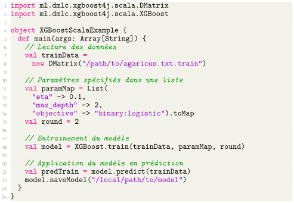

Avant de regarder plus en détail des utilisations des fonctionnalités originales et avancées de XGBoost, nous fournirons ici quelques exemples d'utilisations de XGBoost avec les principaux langages sur lesquels il a été porté. Les différents exemples présentés proviennent directement de la documentation de XGBoost et présentent l'avantage de concerner le même jeu de données.
En Python
Tout le code nécessaire à l'utilisation de XGBoost est regroupé au sein du package développé mentionné dans l'historique (voir
cette page). Pour l'installation des packages sur les différentes plateforme, vous pouvez vous référer à [20].
En R
Tout le code nécessaire pour l'utilisation de XGBoost est ici aussi contenu dans un package nommé
xgboost. Pour l'installation du package sous R, vous pouvez vous référer à [20], il est à noter que cette installation est automatique en utilisant le package disponible sur le CRAN.
En Julia
Julia est un langage plus récent, mais pouvant être utilisé à même titre que le Python, notamment dans des contextes de calculs numériques, de statistiques ou même de programmation générale et de serveurs webs (Julia est aussi censé être plus rapide que Python d'un point de vue exécution, d'où son intérêt aujourd'hui).
À ce titre, XGBoost a rapidement été porté pour ce langage, on remarquera dans le code ci-dessous la proximité avec les syntaxes de R et Python pour l'utilisation de XGBoost.
En Scala
Pour terminer sur les exemples d'utilisation basique de XGBoost, nous fournissons un exemple dans un langage un peu plus exotique qu'est Scala. L'intérêt est ici de voir que XGBoost a également été porté sur des langages à mi-chemin entre l'objet et le fonctionnel.
On remarquera également que le portage de XGBoost sur JAVA s'est principalement fait par Scala. On remarquera en particulier qu'il existe tout un pan de la communauté Spark, qui semble passer directement par Scala pour utiliser XGBoost (et considérer l'interfaçage avec JAVA comme secondaire), comme en témoigne [21] ou encore [22]. La syntaxe devient cependant plus lourde qu'elle ne peut l'être en R ou Python, comme en témoigne le code suivant.

Résumé sur les utilisations basiques
En définitive, nous pouvons remarquer ici que quel que soit le langage, l'utilisation de XGBoost reste assez transparente, et axée en quatre grandes parties :
Ainsi, le fonctionnement reste fortement transparent et transposable entre les langages, dans les limites syntaxiques de ces derniers.